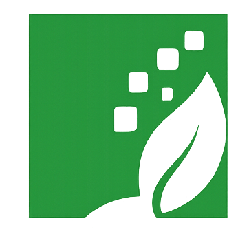
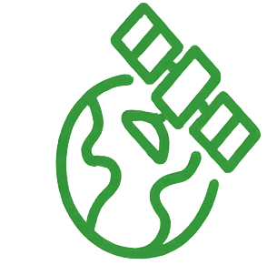
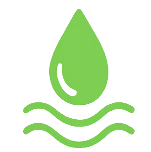

We bridge Earth Observation, AI, and field science to tackle drought, biodiversity loss, and climate resilience.
EcoDapt Lab leads innovative research at the intersection of vegetation ecology and climate science. We specialize in Earth observation (EO) modeling, phenologic analysis, and UAV-based vegetation mapping to monitor and adapt to environmental changes across Africa.

Studying how vegetation responds to climate variables to guide ecosystem resilience strategies.

Leveraging satellite, UAV, and sensor networks to monitor environmental change.

Developing geospatial tools for sustainable water management across borders.
Explore our research articles, technical reports, and geospatial datasets contributing to ecological monitoring and climate resilience in Africa. We provide open-access resources for enhanced scientific collaboration and environmental stewardship.
View PublicationsWe welcome collaborations, student inquiries, and partnerships. Reach us via email or submit your project using the intake form below.
Email: ecodaptlab@gmail.com